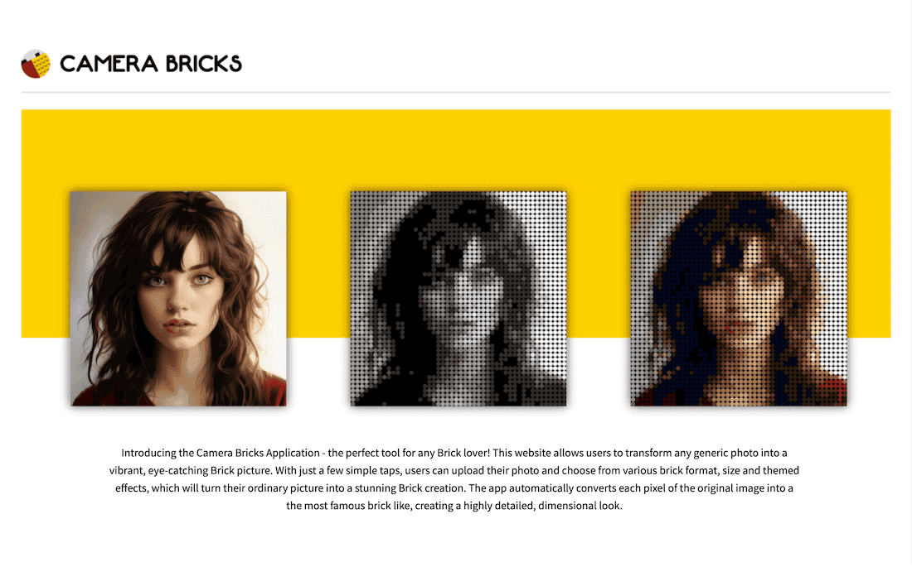

Transform any generic photo into a vibrant, eye-catching Brick picture.
Camera Bricks turns any photo into brick art. Upload an image, pick a brick shape, a level of detail and a colour palette, and the app rebuilds the picture as a mosaic of rendered studs, ready to download as a framed polaroid-style print.
The conversion is a small image-processing pipeline. The upload is first normalised to a fixed working width, then cropped so both dimensions are exact multiples of the brick grid — no partial bricks at the edges. Each cell of that grid is reduced to its average colour, and the average is matched to the nearest entry in the chosen palette using a distance weighted 0.3 / 0.59 / 0.11 across R, G and B rather than a plain Euclidean one, so the match follows perceived brightness instead of raw channel difference.
The last step is what makes the result read as plastic rather than as large pixels: instead of filling each cell with flat colour, the matched colour is multiplied onto a real greyscale photograph of a brick. The stud's own highlights and shadows survive the tinting, so every one of the thousands of tiles in the mosaic keeps its moulded, three-dimensional look.
It runs as a Streamlit app — the entire interface, from the uploader to the download button, is defined in the same Python codebase that does the imaging, with no separate front end to build or deploy.
Holds the whole application in two modules: lego_app.py for the page layout and
flow, and functions.py for the imaging helpers — cropping, nearest-colour
matching, brick colourisation, framing and the download plumbing.
Provides the entire interface — file uploader, the brick / size / palette selectors, tabbed
navigation, spinners and download buttons — from the same Python file as the logic. Its
cache_data decorator memoises the palette and asset loaders, and the app is
configured for a wide layout, a collapsed sidebar and a 20 MB upload limit.
NumPy carries the pixel work: block averaging, the tinting of the brick texture, clipping back into 8-bit range and writing each tile into the output canvas. pandas parses the palette CSVs into the name/RGB mapping the matcher consumes.
OpenCV builds the polaroid frame with copyMakeBorder, using an asymmetric bottom
border plus a thin black outline. Pillow handles decoding, resampling, the logo composite with
alpha masking, and encoding the final JPEG into the in-memory buffer the download button
serves.